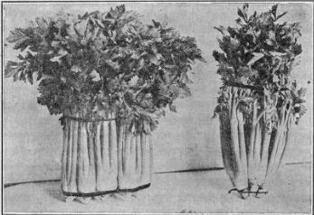

413. Marketing Celery
Description
This section is from the book "Vegetable Gardening", by Ralph L. Watts. Also available from Amazon: Vegetable Gardening.
413. Marketing Celery
In many instances the crop is shipped in the rough direct from the field to city storage houses, where the plants are trimmed and washed by the commission dealers before shipping or delivering to retailers. When this is the practice the plants are graded and a few of the outside leaves are removed before being packed in the field, but the roots are not cut off. The growers in several sections ship to the retailers without removing or trimming the roots, while most producers find this a necessary practice. The roots may be cut off straight near the base of the stalks or tapered rapidly to a blunt point, the latter method being necessary when bunching flat as shown in Figure 79.
The flat method of bunching, i. e., the tying of three or four plants together, is popular on some of the eastern markets. The butts are always tied first, to give the spreading and arched appearance of the stalks, as illustrated in Figure 79. Many local growers prefer to tie in round bunches containing three or four plants, while the most extensive shippers tie in round or rectangular bunches of a dozen plants. Although jute is used by some growers in tying, pink, red or blue tape made for the purpose is very generally employed.
Fig. 79. celery bunched for market. a round bunch of one dozen plants on the left, and a flat bunch of three plants on the right.
The washing may be done before or after tying, the more general practice being to wash before bunching.
When tied flat, washing after bunching is the more convenient way. The use of pure, cold water in washing is important from a sanitary standpoint. It also freshens and helps to preserve the celery in a firm, crisp condition.
Rigid grading is important, but often neglected. Some of the most careful growers and shippers make four grades. The culls or smallest sizes are used largely by hotels and restaurants and served as hearts.
The standard crate in many sections is 24 x 24 inches at the base. From 6 to 16 dozen bunches are packed in this crate, depending upon the variety and the grade of celery. Packs holding 6, 8, 12 or 16 dozen plants are common. Although the 24 x 24 inch crate is most frequently seen, various other sizes and forms are in use.
Michigan growers use crates which vary in size. Measurements made of a lot of packs on an express truck ready for shipment gave the following dimensions: 6 x 12 x 24 inches; 6 x 16 x 24 inches; 6 x 20 x 24 inches; 6 x 26 x 24 inches; 6 x 30 x 24 inches. The number of dozen bunches in the various crates varied from 4 to 24.
The early crop is often wrapped in rather heavy brown paper for shipment and the crates frequently lined with paper.
The crop is handled largely in refrigerator cars holding about 160 crates, small air spaces being provided between the crates. When packing in the field the growers endeavor to have the celery in the cars within two hours after lifting from the row.
Appearance when offered at the market has everything to do with the sale of celery. The stalks must be clean, well blanched, bright and free from rust or dead leaves.
Continue to:
Tags
plants, crops, gardening, cultivated, harvesting, food ,greenhouses, fertiliser, vegitables